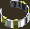
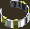
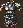
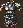

Introduction
This tool handles mass-manipulation of BAMs, a feature that other
tools like BAM
Workshop and DLTCEP do
not (currently) provide.
Near Infinity's Mass Exporter feature will only decompress BAMs
(not dissemble or assemble them) and then only if you want to
decompress all BAMs in the game (not a wise move). BAM Batcher
includes the following subcomponents:
- Convert BAMs to BMPs
- Convert BMPs to inventory BAMs
- Convert BMPs to spell BAMs
- Convert BMPs to description BAMs
- Fix inventory BAM coordinates
- Fix spell BAM coordinates
- Fix description BAM coordinates
- Decompress BAMs
- Compress BAMs
- List BAMs and dimensions
- List BMPs and dimensions
- List GIFs and dimensions
In addition, this mod includes the long-lost
Moinesse's BAMs as a separate component with two options for
installation:
- BAMs only
- BAMs with test items
All components are modding tools - the average
player should not consider installing these, though they can greatly
help modders who work with BAMs (graphical animations). A short
description of each component follows below.
Please read the instructions below before using
this tool. It is quite easy, and a little bit of literacy might
save you a lot of hardship or misunderstanding.
•Back to top
Installation
Extract this utility to your game folder. The main component makes
no changes to your actual game or WeiDU log, so you can run it as
many times as you wish.
You can extract files from the archive using WinRAR, ZipGenius or another
file compression utility that handles .rar files.
Run setup-bambatch.exe in your game folder to
use the utility.
Mac OS X
Extract the contents of the mod to your game folder. On successful
extraction, there should be a /bambatch subfolder in your game
folder. Download the OS X version of WeiDU (or copy another mod's
launcher) and rename it setup-bambatch. Put this
and the setup-bambatch.command file within the
/bambatch subfolder in your main game folder. To use, double-click on
setup-bambatch.command and follow the instructions
on screen.
Linux
Extract the contents of the archive to your game folder. Download
the latest Linux version of WeiDU and copy WeiDU and
WeInstall to /usr/bin. Then open a terminal and cd to your
game directory.
Run WeInstall setup-bambatch in your game folder to
use the tool.
•Back to top
Components
There are two main components. Each component has subcomponents as
detailed below.
BAM Batcher
1. Convert BAMs to BMPs
This option will attempt to extract all frames from the BAMs in the
/bambatch/bam folder. It will save these as BMPs to the
/bambatch/bmp folder. It will place a number after the filename
indicating the BAM frame number.
You can also use this option to extract bitmaps from BAMs directly
in the game. This only requires modification of the first COPY
statement after the subcomponent (currently around line 10) in
setup-bambatch.tp2:
COPY - ~bambatch/bam~ ~bambatch/bam~
To extract all frames from the female elven bard animation, comment
out the line above (put // in front of it) and type below it:
COPY_EXISTING_REGEXP GLOB ~^cefb.+\.bam~ ~bambatch/bam~
It is probably not smart to use this for large quantities of BAMs
(like all of them in the game). However, it should work for just
about any type of BAM (including compressed and run-length encoded
frames).
2. Convert BMPs to inventory BAMs
This option will attempt to assemble similarly-named bitmaps in the
/bambatch/invlarge and /bambatch/invsmall folders. It will save
these as inventory BAMs to the /bambatch/bam folder. The filenames
must have the same name with the exception of the
last character, which must be the letter 'l' for large icon frames
and 's' for small frames. See the relevant folders for examples
(iamul01l.bmp and iamul01s.bmp). Inventory icons have the large icon
(maximum of 64 pixels) centered (half each dimension) and the small
icon (maximum of 32 pixels) offset for its difference from the
32-pixel maximum (usually a negative number).
Both large and small frames must also use the exact same 256-color
palette. If not, the small icon will be forced to the large icon's
palette (since BAMs have only one palette) which may otherwise
produce unwanted results.
3. Convert BMPs to spell BAMs
This option will attempt to assemble bitmaps in the /bambatch/spell
folder. It will save these as spell BAMs to the /bambatch/bam
folder. Spell icons are a maximum of 32 pixels and are offset from
the difference from the 32-pixel maximum.
4. Convert BMPs to description BAMs
This option will attempt to assemble bitmaps in the /bambatch/desc
folder. It will save these as description BAMs to the /bambatch/bam
folder. Description BAMs won't display properly if wider than ~166
pixels, though they can be somewhat larger in height than width.
They are centered (offsets are half each dimension).
Note: Since description BAMs have a single centered frame, this
option will also work for ground icons and many other
"miscellaneous" BAMs. Neither this nor other options will work for
assembling creature animations, which require special attention to
make sure the creature's feet are centered in each frame.
5. Fix inventory BAM coordinates
This option will attempt to fix an inventory BAM in the
/bambatch/bam folder whose X and Y coordinates are not properly
offset (as described above in option 2). It is not necessary if
you've used the option above, which will format the coordinates
properly. The only stipulation is that the large inventory icon
frame needs to be wider than the small icon (as it should be, since
it includes at least a shadow).
6. Fix spell BAM coordinates
This option will attempt to fix a spell BAM in the /bambatch/bam
folder whose X and Y coordinates are not properly offset (as
described above in option 3). It is not necessary if you've used
the option above, which will format the coordinates properly.
7. Fix description BAM coordinates
This option will attempt to fix a description, ground or
miscellaneous BAM in the /bambatch/bam folder whose X and Y
coordinates are not properly offset (as described above in option
4). It is not necessary if you've used the option above, which will
format the coordinates properly.
Note: The formatter will not work correctly for description BAMs
quartered with four frames in the BG1 style. You will need to set
those coordinates manually, which should be as follows:
Frame 0: offset by entire dimensions of
the frame
Frame 1: offset by zero horizontally, full
dimensions vertically
Frame 2: offset by full dimensions
horizontally, zero vertically
Frame 3: offset by zero both horizontally and
vertically
8. Decompress BAMs
This option will decompress BAMs in the /bambatch/bam folder. It
will have no effect on BAMs that are already decompressed (and will
tell you so).
9. Compress BAMs
This option will decompress BAMs in the /bambatch/bam folder. It
will have no effect on BAMs that are already compressed (and will
tell you so). It is not necessary if you've used the conversion or
fixing options above, which will compress the BAMs automatically
(as are most BAMs in the game).
10. List BAMs and dimensions
This option outputs a list of all BAMs in the /bambatch/bam folder
to the file /bambatch/backup/bam_list.txt. It will list each BAM,
frame number and the width and height of each frame. You can modify
this to work with in-game BAMs as described above in subcomponent 1.
11. List BMPs and dimensions
This option outputs a list of all bitmaps in the /bambatch/bmp
folder to the file /bambatch/backup/bmp_list.txt. It will list each
bitmap followed by its width and height.
12. List GIFs and dimensions
This option generates the HTML code used to display the
images in this very readme and outputs it to the file
/bambatch/backup/gif_list.txt. You can modify it for use in your own
mod's readme (or any other HTML documents).
Moinesse's BAMs
1. BAMs only
This option will copy all BAMs from /bambatch/moinbam to your game
/override folder.
2. BAMs with test items
This option will copy all BAMs from /bambatch/moinbam to your game
/override folder. In addition, it will copy items based on the
source BAM also to the /override folder and patch them into a store.
In Tutu, this is the Candlekeep Inn (_inn2616.sto). In BG2 or BGT,
this is Min's Merchandise (shop01.sto), the merchant directly east
of the Circus Tent in Waukeen's Promenade. This allows you to see
how the BAMs will look in-game.
Of course, the best option for this component is [N]ot to install
it, and to create your own items with the BAMs already referenced
in the inventory icon field (hex reference 0x3a). Then you can copy
the items with your own mod installer. See setup-sample.tp2 in the
/bambatch/tools folder for an example.
You can see a list of all 179 BAMs and sample images
below.
Tools
The mod includes several utilities in the /tools subfolder that
are not installed with either component.
1. Paint Shop Pro palettes
I've included several PSP palettes I use for BAMs. These are probably
convertable to Photoshop or another format (though offhand I can't
tell you how to do that).
BGDesc1.PspPalette - a standard palette for description BAMs
BGDesc2.PspPalette - a somewhat modified version of the above palette
BGDesc3.PspPalette - a subtler and darker description BAM palette
BGIcons.PspPalette - a standard inventory BAM palette (used by Moinesse and others)
BGScrollBlue.PspPalette - a palette for making blue scroll BAMs
BGScrollRed.PspPalette - a palette for making red scroll BAMs
BGScrollWhite.PspPalette - a palette for making white scroll BAMs
BGSpellBlue.PspPalette - a palette for making blue spell icons
BGSpellRed.PspPalette - a palette for making red scroll icons
BGSpellWhite.PspPalette - a palette for making white scroll icons
2. Sample templates
These are files you can use as templates for making your own.
setup-sample.tp2 - a sample TP2 installer
for an item mod
spla-blu.bmp - a sample bitmap for a blue
spell scroll
spla-red.bmp - a sample bitmap for a red
spell scroll
spla-whi.bmp - a sample bitmap for a white
spell scroll
splb-blu.bmp - a sample bitmap for a blue
spellcasting icon
splb-red.bmp - a sample bitmap for a red
spellcasting icon
splb-whi.bmp - a sample bitmap for a white
spellcasting icon
splc-blu.bmp - a sample bitmap for a blue
spell book icon
splc-red.bmp - a sample bitmap for a red
spell book icon
splc-whi.bmp - a sample bitmap for a white
spell book icon
swatches.bmp - a palette used for on-the-fly
BAMs
It includes the following colors:
Brown - close to
default inventory screen background
Tan - close to
default description BAM background
Near black - close
to large icon shadow
Pink - botched BAM
Workshop shadow color
Cyan - ground icon
outline
Teal - BAM Workshop
transparency color
Green - default game
transparency color
Finally, the /tools folder contains a template (template.bam) for
making inventory icons with BAM Workshop. BAM Batcher makes BAM
Workshop somewhat obsolete for making multiple BAMs, but it can still
be useful for touching up single BAMs. To use this template with it,
just delete the single frame to fix palette issues, then import your
own bitmap frames.
•Back to top
Frequently Asked Questions
How do I rename files?
You may want to rename files output by the tool. For example, the
BAM to BMP conversion option labels bitmaps with a number
corresponding to their frame order in the BAM file. You may wish to
replace these with 'l' or 's' for easier identification as large or
small inventory icon frames.
You can use a tool similar to the
Bulk Rename Utility or another that supports regular expressions
(regexp) - indeed, even WeiDU itself. Bulk Rename
is quite easy, however. You can right-click on the bmp folder,
select Bulk Rename Here and enter the following
information in the relevant fields under RegEx:
If all frames ending in '0' correspond to large icons:
Match: (^[a-z]+)([0-9]{2})(0$)
Replace: \1\2l
If all frames ending in '1' correspond to small icons:
Match: (^[a-z]+)([0-9]{2})(1$)
Replace: \1\2s
The above examples basically tell it to replace the first
alphabetical characters with themselves, the second two numbers with
themselves, and the last number with an 'l' or 's' as relevant.
How do I convert images from one format to another?
You may have a number of files saved as GIFs you wish to save as
bitmaps, or bitmaps you need to manipulate so they're in the right
format. Or you may want to convert your BMPs to GIFs to display them
online better. Most image editing programs can handle such
operations in batch mode.
In Paint Shop Pro
Go to File > Batch Process, Browse and Select All the GIFs from a
whole folder. Then pick "New Type" under Save Mode and BMP as the
Type under Save Options and specify the output folder. For bitmaps,
make sure the Options are set to standard RGB coding (the default
for most programs) rather than Run length encoding.
In Photoshop
Go to File > Automate > Conditional Mode Change. Choose Source Mode:
Bitmap and Target Mode: Indexed Color. The Batch menu option may
also be able to convert multiple files to another format.
You'll also need to ensure your source bitmaps are in 256-color
8-bit format.
In Paint Shop Pro
Go to Image > Decrease Color Depth > 256 Color palette. Choose
Optimized Octree, Error diffusion and Reduce color bleeding to
produce the best results.
In Photoshop
Go to Image > Mode > Indexed Color. Choose Palette: Local
(Selective), Colors: 256, Dither: None. You may get better results
with other options, depending on the source image.
If you don't have either program, even MS Paint can open most files
and Save As a 256 Color Bitmap, though this will likely produce
substandard results. You are better off downloading GIMP for free.
How do I make sure my bitmaps use the same palette?
Use the tips above to reduce your largest frame to 256 colors. Then:
In Paint Shop Pro
Go to Image > Palette > Save Palette. Name and save it, then switch
to the other image and go to Image > Palette > Load Palette and
choose Nearest color matching.
In Photoshop
Go to Image > Mode > Color Table. Save and name it, then switch
to the other image and go to Image > Mode > Color Table and
Load it.
Can I get that in-game background look like the icons below?
Yes, there is a line (currently around #113) in the .tp2 file you
can uncomment for that. Otherwise, exported bitmap backgrounds get
the default game transparency color (a bright green).
Why do some files take long to convert?
This can happen sometimes with run-length encoded BAM frames or
bitmaps that have too many transparent pixels. For this reason, crop
your bitmap as close as possible to the edges of the actual image.
Your files will be smaller and will convert more quickly without
losing any data. This usually isn't a problem for most game BAMs
which are formatted this way by default.
Can I undo changes I've made?
If you are not satisfied with the changes made (for example, by
fixing BAM coordinates), just restore the original files from your
backup subfolder. In any case, you should delete the files in your
backup folders regularly, as they may pile up. You do not need to
delete files with a numeric extension, however. WeiDU generates these
automatically.
What do I do if I get an error message when using this?
Make sure you've followed the instructions for what you're trying
to do. If it still happens, open the .tp2 file with a text editor,
fix the code and post the corrections ;). Oh, okay… if you're
not comfortable with fixing code, post the error message and the
source file you're using at shsforums.net.
Can I reassemble modified creature animations with this?
Not currently, since they're quite complex. They have several cycles,
each with separate frames, and none of them seem to have intuitive
X and Y offsets, so someone has to manually determine where they
should be. If someone can give me specifications for exact assembly
(or better yet, write the code for it), I can consider adding this.
Can I translate this tool to another language?
Sure, and you can start with this readme. Seriously, that will be
the hard part. I didn't bother generating .tra files since there are
only a handful of strings for the installer.
Do other mods use any of the BAMs below?
Aurora's Shoes
and Boots uses a modified version of mnboot02.bam for the
"Everyday Boots" (Green, Blue and Yellow) as well as the upgraded
Thrice-Armored Boots. It also uses a version of mnboot08.bam for the
Boots of Battle and its upgrade, the Boots of War. There may be
other mods, but it's doubtful, since these have not been publicly
available for some time (and weren't formatted correctly in the
first place). That shouldn't prevent other mods from using the same
BAMs though, since I modified them.
This thing rules! Can I send you a bottle of something?
Aye, single-malt scotch preferably, but I'm easy.
This thing sucks! Can I send you a bottle of something?
See previous item (and no, you can't set it on fire :P).
•Back to top
Credits
Programs/tools used in creation:
BAM Batcher is copyright © 2009 by Miloch. This work (including
all code and documentation) is licensed under the WTFPL. You just do WTF you
want with it. While I won't stop you from making a mod with
super-power-granting +10 items using these BAMs, I will probably
ridicule you (or if I don't, someone else will). These are classy
BAMs - make a classy mod with them :).
•Back to top
Version History
Version 1: 12 Sept 2009
•Back to top
 


 
